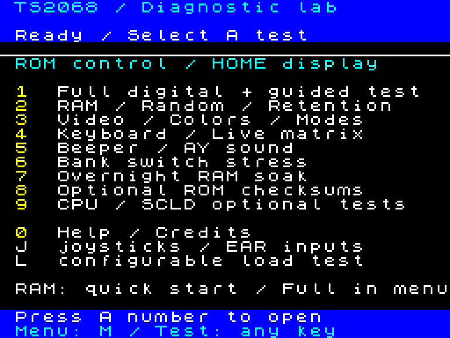
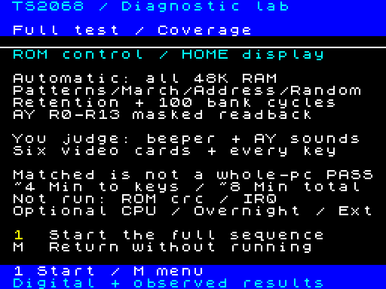
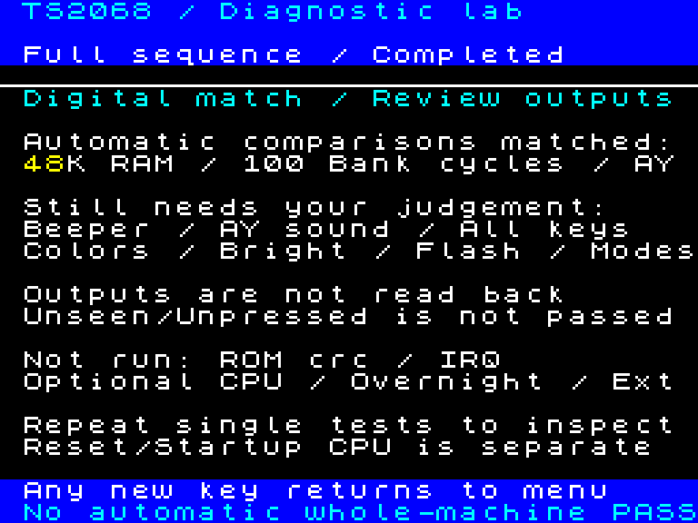
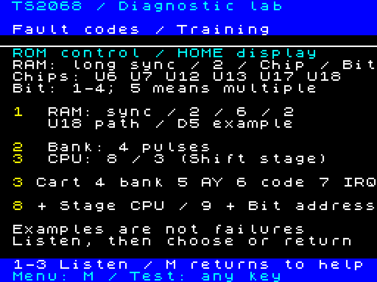
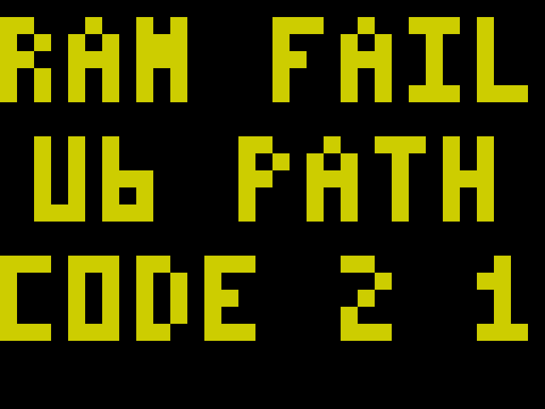
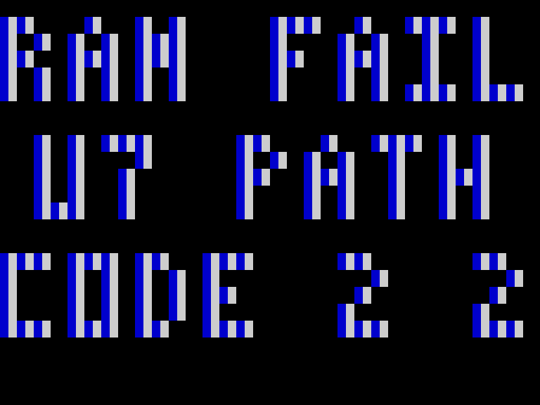
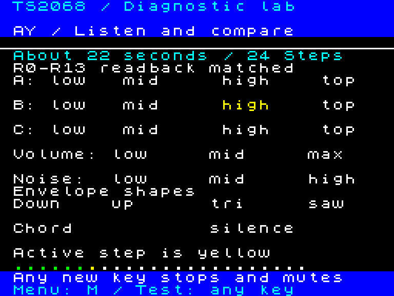
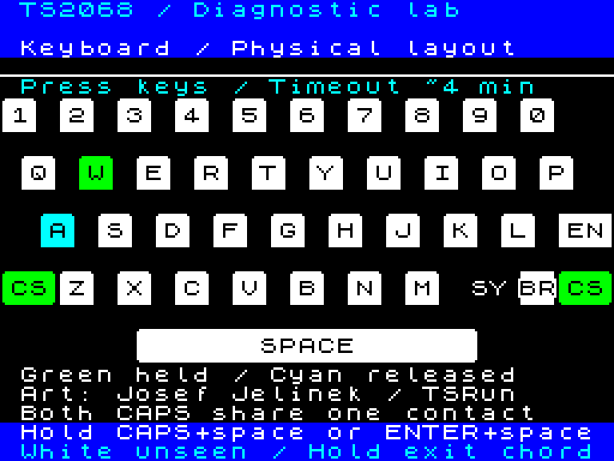
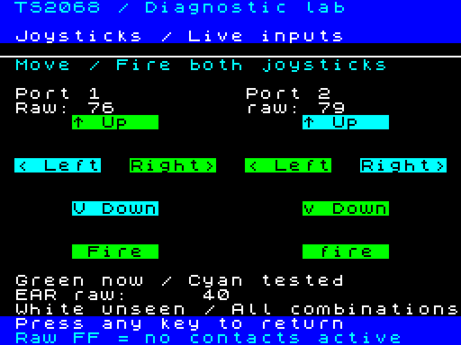

01Introduction: purpose, fault reporting and limits
What the cartridge does
The TS2068 Diagnostic Lab cartridge tests working, unreliable or partly functioning machines. Test control runs from ROM: choose quick startup, Full, individual tests or repeated RAM testing. A simplified replacement HOME ROM image is also supplied for replacement testing. It installs at U16 with the specified adapter, bypassing original HOME firmware and cartridge-startup dependencies with reduced test coverage.
What you can test
Tests cover all 48K HOME RAM, selected CPU/address paths, DOCK banking, AY, beeper, keyboard and native video. The cartridge can attempt to identify which RAM chip(s) are failing: U6, U7, U12, U13, U17 or U18, including implicated bits. Multiple suspect chips can be reported in turn by screen text or audible codes when the display is unreadable. These are chip-path leads; wiring/decode faults can mimic a failed IC. Separate options cover HOME/EXROM CRC32, SCLD interrupts and EAR/joystick levels. Full does not include every option.
Faults it may reveal
Examples include stuck RAM data bits, lost writes, some bit coupling, address aliases, pattern-dependent errors, intermittent RAM failures, incorrect bank signatures or overlay writes, AY register mismatches and missing/unexpected interrupts. Early CPU checks can detect selected result inconsistencies if enough CPU/ROM execution survives. You may spot missing colors/brightness/FLASH, damaged geometry, absent tones/channels or key-row/column faults that software cannot verify automatically.
What remains useful when parts fail
RAM errors can identify suspect U6/U7/U12/U13/U17/U18 chip and bit paths. When one display nibble survives, the renderer uses its pixel/color information for large readable reports; when usable text is unavailable, ROM-controlled beeper and border pulses can still report. Boot CPU/address mismatches use repeating codes without display or keyboard. The manual explains the codes and shows actual emulated U6/U7 fault screens. Border and beeper share SCLD dependencies, so both can fail together.
How to interpret a result
A chip or address PATH is a troubleshooting lead, not proof that a particular package or CPU pin is defective: wiring, decode, supply or shared buses can cause similar symptoms. Record the code, first address, expected/observed data and phase where provided. Matched comparisons establish only the covered behavior during that run. Sound, video and keys require your observations; an unpressed key or unseen output is untested. A different ROM checksum can mean a custom ROM.
What it cannot do
A passive cartridge needs working HOME initialization to launch. Dead CPU/clock, corrupt instruction fetch, lost ROM selection or unusable outputs can prevent reporting; silence cannot identify a failed component. Tests do not cover every CPU instruction, SCLD gate/pin, timing or intermittent fault. Replacement RAM, temperature measurement, persistent logs, safe NMI stopping and external Pico/ULA+ tests remain future work. Emulator checks exist; physical acceptance is pending.
02Start here

Prepare
Power off before fitting a physical cartridge. Use a cartridge board that exposes all eight 8K DOCK ROM chunks. For Fuse, select the TS2068 model and load diagnostic-v02.dck. For an EPROM, use the explicitly named 27C512 BIN and the programming instructions later in this manual.
Power on
Release the keys for default boot: a short ROM0 register/arithmetic/shift check, cartridge integrity, all-48K 00/FF sweeps, then 16 address pairs with 55/AA qualification and opposing values. Allow about 9 modeled seconds including native launch. Hold R for complete RAM or F for Full; the early CPU check still runs. R/F is highlighted. A faulty keyboard may prevent choosing them.
Stop or return
Release all keys, then press any new key to stop active RAM, banking, soak, sound or video at a safe boundary. If a contact stays held, this stop channel cannot arm. Finite tests still finish. Keyboard testing has its own exit chord: hold ENTER+SPACE or CAPS SHIFT+SPACE. Result screens accept a key; RAM reports offer R retry or a new key to reach the menu.
What startup establishes
00/FF checks detect stuck data bits and gross write/read failures. Qualified address pairs add localized alias checks and mixed-bit coverage without repeating a full 55/AA sweep. Startup omits full walking patterns, March, address-derived planes, random and retention. A menu is evidence of reaching that point, not certification of the machine. Complete RAM takes approximately 84 seconds; allow about 1.5 minutes.
Choose a test
Main menu: 1 Full overview, then 1 to start; 2 RAM; 3 Video; 4 Keyboard; 5 Sound; 6 Banking; 7 Overnight; 8 ROM CRC; 9 CPU/SCLD; 0 Help. J opens joysticks/EAR; Help C teaches codes. Full runs complete RAM, 100 bank cycles, beeper, AY, six video cards and keyboard. Holding F at startup runs directly. Read the next two chapters for coverage and result interpretation.
03Full test: exactly what runs

Select and start
Choose main menu 1 to see the overview, release the key, then press 1 to run or M to return. Hold F at startup to run Full automatically. Cancelled or failed runs do not reach the completion summary. Cold boot additionally checks minimal CPU behavior and cartridge integrity; choosing Full from the menu does not rerun those checks.
Automatic RAM comparisons
All 48K HOME RAM, including both display files and optional UI storage: eight fill/read patterns, walking bits/complements, March C-, address hash/low/high planes, seeded random and 55/AA normal-refresh write/hold/read. Passing means reads matched the expected data during these algorithms on this run.
Automatic bank and AY comparisons
100 cycles of 18 HSR masks check DOCK signatures, attempted ROM writes and HOME sentinels. Passing supports the exercised selection/write-isolation paths, not every possible timing/interrupt workload. AY R0-R13 masked readback checks exercised register/data paths; matching registers does not prove sound output.
Guided observation sequence
Beeper low/mid/high; 24 AY channel/pitch/volume/noise/envelope/chord/silence steps; six video cards (bars/BRIGHT, normal/FLASH, second file, extended color, hires, 128 attribute combinations); keyboard press/release display. You must hear, inspect and operate these. Brief Full video cards can be revisited individually.
Excluded tests
HOME and EXROM CRC32, optional five-stage CPU/localized address test, SCLD IRQ inhibit/arrival, raw EAR/joysticks, overnight runs and expansion/PicoVideo/TSPico hardware tests are separate. Full is the normal stock-machine digital-plus-guided sequence; it is not every catalog entry or a complete SCLD/CPU certification.
04Full test: interpreting completion

Automatic comparisons matched
This summary appears only after the scheduled digital checks reached the guided keyboard stage and that stage exits or times out. It supports RAM data comparisons, the 100-cycle bank signature/write-isolation comparisons and masked AY register readback for this run. It does not mean every key was tested or every output looked/sounded correct.
Your observation checklist
Confirm all three beeper tones; every AY channel and expected changes, ending in silence; all colors/BRIGHT/FLASH and correct display modes, geometry and fine detail; press/release every key and check shared-row/column behavior. An unseen output or unpressed key is untested, not passed. Repeat single tests for thorough inspection.
What a satisfactory Full run confirms
When digital comparisons match and you verify the guided observations, the machine performed the covered memory, mapping, AY, beeper, native video and keyboard functions under this workload. Report it as “covered checks matched; observed outputs satisfactory,” with the configuration and run recorded.
What it does not confirm
ROM identity/integrity, optional IRQ behavior, complete instruction-set correctness, precise clock/contention timing, every SCLD internal function/pin, all expansion hardware or long-term thermal reliability. A fault outside the exercised patterns/addresses/timing can still exist. Use the separate tests appropriate to the symptom.
Stop, mismatch and return
A cancelled sequence returns to the menu without this digital-matched summary. A digital mismatch stops at its fault report; record it before retry/acknowledgement. Keyboard timeout is completion of the presentation budget, not keyboard certification. The summary ignores the held exit chord and accepts a new key to return.
05If the machine cannot show the menu
No cartridge activity
Try the cartridge on a working TS2068, verify programmed bytes and decode, and check power/reset/clock with instruments. No picture/pulses do not identify the Z80. Passive LROS needs HOME initialization. Before any RAM use, a detected boot CPU mismatch repeats8/stage1–3. A detected boot alias repeats9/index1–16. These reports need only the surviving ROM/CPU/FE output path; reset or power cycle to retry.
Border changes but text is broken
The CPU may still be testing RAM while its display is being overwritten. Watch the phase colors and wait for a report. Record a repeated pulse code if text cannot be read. Beeper and border share SCLD dependencies; failure of that output path can silence both even while instructions execute.
Which resources are needed
After entry the normal suite uses cartridge instructions, embedded font/data, CPU registers, fixed ROM jumps and bounded loops. It does not return through a HOME stack. RAM is test data, including screen memory. Meaningful rich UI needs enough bitmap/attribute storage and video output; the minimal RAM reporter can instead use pulses.
Keyboard is faulty
Default startup is finite and does not require a key. A working contact may select other tests, but stuck keys can block cancellation. Use finite tests on such a machine. The keyboard test can time out, and ENTER+SPACE is available in emulation without a dedicated BREAK key.
Limits
Software cannot report if the CPU clock, required instructions or active ROM fetch path no longer work. Optional EXROM CRC executes a qualified RAM gateway, so it has additional exposure to late opcode corruption. IRQ tests require interrupt entry bus writes to complete. Do not use NMI to interrupt arbitrary tests: the present vector restarts entry, rather than performing a qualified cancellation.
06Learn the fault sounds

Practice on a working machine
Select 0 Help, then C. Press 1 for the RAM example, 2 for banking, or 3 for a CPU example. Let each finite demonstration finish, then choose another or M to return to Help. The screen says TRAINING: these signals are synthetic examples, not detected faults.
RAM format
A long white synchronization tone is followed by three separated groups: 2 / chip index / nibble bit. Count white flashes or audible tone bursts. Chip indices 1–6 mean U6, U7, U12, U13, U17, U18. Bit indices 1–4 mean the first through fourth data bit within that chip; 5 means more than one implicated bit. The real reporter cycles all implicated chips.
Worked example
Long sync, then 2 / 6 / 2 means RAM path U18, its second nibble bit: CPU D5. At address C123, expected FF and observed DF differ by 20 hex, so D5 failed. This points to U18 or its associated wiring/select/data path; it does not prove the chip package is the cause.
Other families
Single repeated groups without the RAM synchronization tone: 3 cartridge/asset integrity; 4 banking; 5 AY digital comparison; 6 CRC code/gateway qualification; 7 IRQ. Family 6 is not a stock-ROM checksum mismatch: a different measured CRC can be a modified ROM.
CPU and address codes
Menu9/U emits 8 / stage once at each checkpoint; a detected mismatch repeats 8 / stage. Stages 1 registers, 2 arithmetic, 3 shifts, 4 alternate registers, 5 IX/IY; stage 6 introduces addresses. The smaller boot CPU check emits8/stage1–3 only on a detected failure, without a screen. Address mismatches repeat9/index,1=A0 through16=A15. Boot8/9 repeats until reset; lack of output is not a pass.
07RAM sound codes: chip lookup
Listen without a readable screen
Wait for the long synchronization tone. Count three separated groups of short tone bursts: first 2 (RAM fault), then the chip number, then the bit number. The border flashes the same groups if video output is usable. Wait for the next long sync if you lose count. Reports repeat; multiple implicated chips can cycle through different chip numbers.
Pitch and pacing
Sync: lower tone, about 150Hz for 1.2 seconds, then 0.9 seconds silence. Counting beeps: about 430Hz for 0.6 seconds each, with 0.4 seconds silence between beeps and 1.3 seconds between groups. Count bursts, not pitch changes. A 2 / 6 / 2 report repeats roughly every 15 seconds. These are nominal-clock model timings.
Chip lookup
| Groups after sync | Suspect chip | HOME addresses | Bit group 1 / 2 / 3 / 4 |
|---|
| 2 / 1 / bit | U6 | 4000-7FFF | D0 / D1 / D2 / D3 |
| 2 / 2 / bit | U7 | 4000-7FFF | D4 / D5 / D6 / D7 |
| 2 / 3 / bit | U12 | 8000-BFFF | D0 / D1 / D2 / D3 |
| 2 / 4 / bit | U13 | 8000-BFFF | D4 / D5 / D6 / D7 |
| 2 / 5 / bit | U17 | C000-FFFF | D0 / D1 / D2 / D3 |
| 2 / 6 / bit | U18 | C000-FFFF | D4 / D5 / D6 / D7 |
Bit-group lookup
| Last group | Meaning |
|---|
| 1 | First bit carried by the chip |
| 2 | Second bit carried by the chip |
| 3 | Third bit carried by the chip |
| 4 | Fourth bit carried by the chip |
| 5 | More than one implicated bit; use the chip number |
Example to recognize
Long sync, two bursts, pause, six bursts, pause, two bursts: 2 / 6 / 2 identifies U18 path, D5. Long sync, 2 / 1 / 5 identifies U6 path with multiple implicated bits. U6/U7 faults affect both display files; sound reporting can remain useful when text cannot be read.
Practice and limits
On a working machine choose 0 Help, C Fault codes, then 1 for the synthetic U18/D5 example. Compare what you hear with 2 / 6 / 2. A code identifies a chip path, not proof that the IC itself is defective: wiring, power, decode or shared buses can mimic it. Sound still needs working CPU/ROM execution and SCLD/beeper output; silence cannot identify a chip. Ref designators and nibble assignments follow the original Timex schematic.
08RAM chip map and first-fault interpretation
Physical mapping
4000–7FFF: U6 carries D0–D3; U7 carries D4–D7. 8000–BFFF: U12/U13. C000–FFFF: U17/U18. The first chip in each pair is the low nibble. All ranges are hexadecimal. Ref designators follow the original Timex schematic.
Where display data lives
Primary pixels 4000–57FF, attributes 5800–5AFF; secondary pixels 6000–77FF, attributes 7800–7AFF. Both files use U6/U7. Choosing the second display cannot escape a defective chip in this pair. DOCK CPU overlays do not relocate native video fetches into upper RAM.
Reading the report
Record the chip PATH label, first address, expected byte, observed byte, phase and pulse groups before acknowledging. The XOR of expected and observed identifies implicated bits. Later errors contribute region bit unions while the first-fault fields remain retained in registers. A random-phase mismatch stops promptly to avoid corrupting its generator state.
Interpret patterns
One consistent nibble suggests that package and its path. Errors across several regions on the same data bit can suggest a shared data-bus path. Many addresses or both nibbles can implicate decode, supply, refresh or shared connections. These are troubleshooting hypotheses; verify against the schematic and measurements before replacing parts.
Follow up
Retry to check repeatability, then use complete RAM and overnight testing on an otherwise responsive machine. Compare cold and warm behavior. Save photos and codes with configuration, ROM hashes and cartridge readback. No automatic temperature measurement or persistent fault log is provided.
09When U6 display RAM fails

Actual injected example
The illustration is an emulated target firmware capture with U6 implicated, not a hand-drawn mockup or a photograph of a repaired machine. It demonstrates the report produced under a controlled display-memory fault.
Why large text can survive
U6 supplies bitmap D0–D3 and INK/part of PAPER attributes. The reporter uses surviving U7 bitmap lanes and PAPER color bits to encode coarse large glyphs. It draws from ROM with register-held fault state; the failed nibble is not used for a return address or message pointer.
What to do
Read the U6 PATH label if visible, then confirm the pulse chip index 1. Record the nibble-bit group: 1=D0, 2=D1, 3=D2, 4=D3, 5=multiple. A readable label is supporting evidence; retain the sound/border code too.
What is not guaranteed
This contrast method covers stable stuck-bit/nibble models. Intermittent corruption, bad address decoding, multiple changing faults or broken SCLD video fetches may defeat it. The reporter never waits for the user to confirm that text is visible.
10When U7 display RAM fails

Actual injected example
This target capture shows the alternate renderer used with U7 implicated. Its appearance differs because the surviving color and pixel lanes are different.
Why the alternate renderer works
U7 supplies bitmap D4–D7 and PAPER high color bits, BRIGHT and FLASH. The reporter uses healthy U6 low bitmap lanes and INK color bits, adjusting PAPER low bits to preserve contrast under modeled FLASH inversion. Simply enlarging an ordinary font would still trust defective attributes.
What to do
Confirm chip index 2 in the RAM pulse sequence. Bit groups 1–4 mean D4–D7. Upper-region chip failures can leave normal display storage available; simultaneous lower-region faults select the corresponding degraded renderer.
If both U6 and U7 fail
When both display nibbles are implicated, the firmware skips unreliable text and repeats its ROM-controlled pulse report. A blank or damaged picture is expected. If the SCLD output path also fails, external diagnosis is necessary.
11Complete RAM, random and overnight testing
Select
Menu 2: 1 complete, 2 patterns/walking bits, 3 March C-, 4 address-derived data, 5 seeded random, 6 write/hold/read. Menu 7 repeats complete passes overnight. Choose complete RAM when quick startup passes but a game still fails. Stop by release followed by a new key; the first mismatch stops soak and reports.
Complete RAM result
A successful Complete RAM run shows All 6 RAM chips PASS and lists U6, U7, U12, U13, U17 and U18. This means all covered 48K comparisons matched during the complete test; it is not a guarantee against future intermittent faults. Press a new key to return. Shorter individual RAM options show Selected checks PASS after their comparisons complete. Each result stays on screen until a new key is pressed; a held selection key cannot dismiss it. Quick startup proceeds to the menu. Mismatches instead identify suspect chip(s) and bits by text and sound; wiring/decode can mimic a failed chip. The RAM menu advertises chip identification.
Expected duration
Healthy menu-selected runs: 1 Complete about 84 seconds; 2 Patterns/walking about 41 seconds; 3 March C- about 8.5 seconds; 4 Address data about 8 seconds; 5 Random about 3 seconds; 6 Write/hold/read about 24 seconds. Overnight repeats until cancelled or a mismatch; allow roughly 1.5 minutes per complete pass. These are emulator-model estimates at the nominal stock CPU clock, not physical stopwatch measurements. See the timing chapter for Full and startup.
Patterns and walking bits
Complete testing fills and reads all 4000–FFFF with 00, FF, 55, AA, 0F, F0, 33, CC; then walking-one and complementary values exercise individual data bits. 55/AA help expose some coupling/bridges that 00/FF misses, but uniform patterns alone do not distinguish aliased locations.
March and addresses
March C- initializes zero, then ascending read/write transitions and descending transitions test ordered interactions. An address hash and separate low/high address-byte planes detect address-dependent errors. The optional CPU/address test separately probes 16 localized address pairs.
Random and retention
The deterministic 16-bit LFSR uses seed ACE1 and polynomial B400. It is repeatable, not an unbounded random source. Retention writes 55 and AA, holds under normal refresh, then reads. There is no deliberately disabled-refresh test or adjustable long dwell in this release.
Progress and results
Border: blue patterns; cyan walking; yellow March; magenta addresses; green random; red retention. Screen contents are expendable during sweeps. Overnight shows a 16-bit completed-pass count that wraps at 65536; no elapsed-time clock. When stopped with no recorded errors, it shows No failures during the test and the count, then waits for a new key. Recorded failures instead go to the chip/bit report. A completed comparison does not rule out thermal/timing faults that did not occur during the run.
12Expected test durations
Use these as guidance
Timings come from the exact v0.2 firmware in the TSRun model at 3.528MHz with healthy RAM. They are simulated machine time, not the host computer’s execution speed or physical acceptance measurements. Emulator speed controls, clock/contention differences, user actions and detected faults change elapsed time. The summary or fault report marks completion; elapsed time alone is not a pass.
RAM options
Menu 2 / 1 Complete: about 84 seconds (allow 1.5 minutes). 2 Patterns/walking: 41 seconds. 3 March C-: 8.5 seconds. 4 Address data: 8 seconds. 5 Seeded random: 3 seconds. 6 Write/hold/read: 24 seconds, including both normal-refresh dwell periods. Menu 7 Overnight repeats complete passes until stopped or a fault, roughly 1.5 minutes per pass; it has no scheduled overnight endpoint.
Full automatic and guided stages
From selecting Full: RAM about 84 seconds; bank checks and transitions about 1 second; beeper about 15 seconds; AY register/playback section about 22 seconds; six video cards about 18 seconds each. Keyboard appears about 3 minutes 50 seconds after start. These rounded stage estimates include some drawing/transition overhead.
Full keyboard and completion
Press and release keys while inspecting the keyboard display. Hold ENTER+SPACE or CAPS+SPACE to end the keyboard stage and show the summary. With no contacts pressed, keyboard times out in about 3 minutes 54 seconds; total Full time is about 7 minutes 42 seconds. Allow 8 minutes unattended. Timeout does not certify unpressed keys; an earlier exit reduces the total.
Power-on choices
Normal quick startup reaches the menu in about 9 seconds including native launch (about 7 seconds after cartridge entry). Held R requests complete RAM: allow roughly 1.5 minutes from power-on. Held F runs Full: add a few seconds of native launch/integrity/status setup to the menu-selected timings. Hold until the selected startup page appears, then release.
What happens while waiting
RAM overwrites the screen being tested. Watch border phase colors: blue patterns, cyan walking, yellow March, magenta addresses, green random, red retention. A steady phase color is expected during a sweep or dwell. Release all keys, then press a new key to cancel at safe boundaries. Keyboard uses its exit chord or timeout instead. Fault codes may repeat indefinitely until acknowledgement/reset; do not interpret that as a still-running healthy test. Individually selected video cards wait for a new key, and banking/overnight continue until stopped or a fault.
13Banking and intermittent failures
Select and observe
Menu 6 runs continuously; Full runs 100 cycles. Watch the pass counter and leave it running to look for intermittent mapping faults. Release then press a new key to stop. A mismatch restores the normal anchor where possible and repeats family 4.
How it tests
Eighteen HSR mask combinations cover individual chunks and combinations, including alternating masks. Each keeps ROM chunk 0 selected. The test checks selected ROM signatures, attempted ROM writes and HOME sentinels to detect overlay write leakage. All eight cartridge chunks must be present.
Interpreting a failure
Record DETAIL, ADDRESS and phase before returning. A signature mismatch can involve cartridge data, contacts, HSR/decode, shared buses or a virtual DOCK implementation. A write-isolation failure suggests an overlay/write-enable path. Family 4 alone does not localize a particular SCLD pin.
Sinistar incident
A cartridge working on another TS2068 is a useful comparison, but the reported Sinistar startup symptom is not yet characterized. This test stresses mapping; it does not reproduce the exact Sinistar instruction/interrupt/speech workload or prove that banking caused that incident.
Coverage limits
The active ROM anchor is an unavoidable dependency. If a fault hides it, a recovery jump may not execute. The current loop does not checksum every byte on every transition or exercise all external expansion personalities.
14Video tests: what a person can detect
Select
Menu 3: 1 color bars, 2 normal/FLASH, 3 second display, 4 extended color/dither, 5 high resolution, 6 attribute combinations. Press any new key after release to return; finite display budgets also return automatically. Full shows brief versions, so select a card manually for inspection.
Normal / Bright bars
Compare corresponding top Normal and bottom Bright bars. Each attribute pair differs only in BRIGHT bit 6; FLASH is disabled. Bright colors should have higher intensity where the video system supports it. Black stays black. Labels remain visible without extra brightness. Equal halves can implicate output circuitry or a video interface/monitor, even when CPU RAM reads match.
Normal, FLASH and second display
Look for all color components, stable borders, clean bit-lane patterns and the flashing lower region on the standard card. The second-display card has reversed bars and the opposite diagonal: verify selection changes the file. Missing FLASH, repeated rows or wrong serialization may be visible without an automatic digital mismatch.
Extended color and hires
Mode 2 uses an original Sierra Lite diagonal gradient and hue/saturation disc, constrained to native two-color shared-BRIGHT 8x1 cells. Inspect fine color transitions and row alignment. Mode 6 interleaves the two planes into a 512-pixel geometry/grating calibration pattern; check circles, aspect, edges and 1/2/4/8-pixel detail.
128 combinations and isolation
The Mark Miller-inspired grid demonstrates 128 attribute combinations, not 128 distinct hardware colors. Test native and external outputs separately if both exist. Missing RGB components, brightness, sync, geometry or detail can come from the display chain as well as the computer. CPU readback cannot certify analog video. PicoVideo ULA+ tests are future profile-specific work.
15Beeper and AY sound

Select
Menu 5: 1 selects beeper; 2 selects AY. Beeper plays low with a red border, middle with magenta, then high with green, followed by silence. Each color stays steady for its tone. Listen for all three; software has no audio loopback. Release/new key cancels. Silence with changing border colors can suggest the audio output path, but shared SCLD dependencies prevent a universal diagnosis.
AY digital check
Masked index-dependent comparisons exercise registers R0–R13. R7 keeps port A configured as input. R14/R15 are not treated as RAM storage. A failed comparison shows register/phase details and repeats family 5. Readback success does not establish the oscillator, mixer, DAC or analog output.
AY listening sequence
Yellow marks the active item; green dots count completed steps. A, B and C each play four periods (1000, 500, 250, 125), making pitch increase. Then A volume low/mid/max; three noise periods; descending, ascending, triangle and saw envelopes; a three-channel chord; silence. There are 24 steps.
Interpret and stop
Listen for each channel separately before the chord. A missing channel with matching registers suggests a channel/audio path rather than storage alone. Similar envelope sounds may reflect routing/mixing or chip behavior; compare against a known good machine. Output is muted between steps, on cancellation and on exit. External loading, cables and monitor audio remain possible causes.
16Keyboard, EAR and joysticks

Artwork and labels
The keyboard adapts Josef Jelinek’s TSRun artwork to the native 256-pixel display. Source key-face contours, staggered rows and wide keys are retained; tiny BASIC legends are removed and readable main labels redrawn. CS=CAPS SHIFT, EN=ENTER, SY=SYMBOL SHIFT, BR=BREAK. The screenshot shows W and both shared CAPS held green, A previously released cyan and other keys unseen white.
Keyboard procedure
Select menu 4; press and release each physical key. Green means currently held, cyan means previously pressed/released, white means unseen. The 42 physical positions represent 40 electrical matrix contacts: both CAPS keys share one contact. Test them physically in turn.
Exit in emulation
Hold ENTER+SPACE, or CAPS SHIFT+SPACE, for the required sustained scans. A dedicated BREAK key is unnecessary: BREAK is the CAPS+SPACE combination. The test also has a finite scan budget. Fuse needs key events, not pasted text; focus the display and use actual keys or the Windows On-Screen Keyboard when remote text entry does nothing.
Interpreting rows
Several keys on one row or column can implicate the shared scan/return wiring or a connector rather than all key switches. Ghosting or intermittent contacts need visual/user observation. The optional press-history RAM can be unreliable on a faulty machine; it is not diagnostic control state.
Joystick entry
Press J at the main menu for the live two-port direction/Fire display; Help/P remains an alternate entry. The next chapter explains the indicators. AY port A stays input-safe. EAR is raw level observation, not cassette decoding or loopback; full cassette tests remain future work.
17Joysticks: live directions and Fire

Open and operate
Press J on the main menu. Move both compatible TS2068 joysticks and press Fire. Each port has a spatial pad: Up above, Down below, Left/Right at the sides and Fire below. Green means active now; cyan means previously activated and now released; white means unseen. Repeated presses always return to green, so intermittent transitions remain visible. All five indicators are independent.
Simultaneous controls
Try diagonals and direction plus Fire: all involved labels should turn green together. Opposing directions are displayed too, so wiring faults are not hidden by filtering. Test both ports at once and check that one does not alter the other. The image shows port1 Up+Right+Fire and port2 Down+Left+Fire in green; their previously activated opposite directions are cyan. Cyan records an observation, not automatic contact certification. Very brief changes between samples can be missed.
Raw data and interpretation
Active-low AY R14 bits0-3 are Up, Down, Left, Right; bit7 is Fire. Raw FF means no active contact, but a disconnected joystick can also read FF. The test observes signals; it cannot certify an untouched contact. EAR raw00/40 is separate. R7 keeps the port configured for input.
Stop and follow up
Release held keyboard keys, then press any key to return. The scan budget is finite. Missing or linked signals can implicate a switch, shared wiring, connector, selection transistor or AY input path; observe and compare before replacing components. This graphical test is also in the U16 HOME edition. See JOYSTICK_TEST.md for implementation and all-combination evidence.
18CPU and address faults
Select and expectations
Menu 9 then U first shows the checkpoint/code guide, then performs register, arithmetic, shift, alternate-register and IX/IY consistency checks. Each stage emits 8 then its stage number once. Success reaches Selected checks PASS. Repeating 8/stage means a comparison failed. A stalled machine may provide only its last checkpoint.
Localized address probes
Sixteen selected address pairs are written with different values and checked for aliasing. A mismatch repeats 9 / index (1=A0 through 16=A15). The test runs from a fixed ROM2 anchor with HOME access bridges; it assumes these instruction fetches and mapping remain usable. An implicated bit can be a RAM/decode path, not necessarily a defective Z80 pin.
What startup can indicate now
All boot choices first perform a separate small ROM0 check: stage1 general registers, stage2 arithmetic/flags/logic, stage3 shifts/carry. Detected faults repeat8/stage before any HOME writes. Successful default00/FF sweeps lead to16 address pairs: each endpoint passes55/AA before opposing writes. A mixed-data mismatch joins RAM chip reporting; a remaining pair mismatch repeats9/index. R/F use complete RAM address coverage instead. Boot8/9 reports repeat until reset, without screen/keyboard dependencies.
Replicated ROM: future design
A small recovery program duplicated across an address-line boundary can survive a stuck higher address bit if every fetched byte, operand and target remains equivalent after mapping. Lower bits are harder because the fault collapses adjacent instruction/operand bytes. Global faults can also change HOME bootstrap, DOCK selection and I/O decoding. Current LROS header and dense 64K assets are not a replicated recovery image.
Remaining limits
A global opcode-data fault, missing clock, unusable branch/register state or unavailable ROM anchor may stop reporting. A surviving checkpoint is a clue, not proof of a specific CPU transistor or pin fault. Qualified stack operations, timing measurements and independent Pico code verification are future tests.
19ROM identity and SCLD IRQ
ROM checksums
Main menu 8: H selects HOME U16; E selects EXROM U20 CRC32. Stock values: HOME BF44EC3F (16K), EXROM AE16233A (8K). Record measured values. A difference can mean a custom ROM or corrupt reads; compare a dump with the intended image before condemning a ROM.
Code/gateway qualification
HOME CRC executes a checked high-ROM routine while exposing HOME 0000–3FFF. EXROM CRC first copies/checks a 256-byte gateway at C000, switches the globally exclusive external source, then restores DOCK. A gateway/code qualification failure repeats family 6 and avoids transfer; a later RAM opcode failure remains an additional risk. These tests are excluded from Full.
IRQ procedure
Menu 9 then I checks inhibit and bounded interrupt arrival. A missing arrival times out; failed inhibit reports too. Family 7 indicates an IRQ comparison failure. The ROM0038 handler goes to a fixed checkpoint and discards the interrupted return state; it does not RET through a suspect RAM stack.
SCLD interpretation
The suite separately exercises mapping, native modes/file selection, border/speaker control, keyboard/EAR reads, video presentation and IRQ behavior. The IRQ entry still writes the saved PC to a sacrificial HOME location; it need not read it back. The software cannot certify every internal SCLD gate or identify an unsoldered pin from one symptom. Shared paths need schematic-based probing; contention/pin-level fixtures remain future work.
20EPROM, PicoROM and TSPico delivery
Choose the file
diagnostic-v02.dck is the emulator/virtual DOCK image: 9-byte header plus 65536 bytes. diagnostic-v02-eprom-27C512.bin is the EPROM-ready 65536-byte raw image. diagnostic-v02-picorom.bin and diagnostic-v02.bin contain identical raw bytes. Never program the DCK header into an EPROM.
EPROM procedure
Use your actual 27C512-compatible device profile, load at 0000, program the entire image and byte-verify/read back. Match manufacturer programming voltage and board socket pinout. CPU A0–A15 address ascending chunks 0–7 directly. All chunks require proper DOCK read-enable decode and bus release on writes/unselected cycles. A 32K interface is insufficient. See EPROM_LOADING.md.
PicoROM procedure
Use the matching P28/27C512 interface profile. picorom list identifies devices; picorom upload YOUR_DEVICE_NAME diagnostic-v02-picorom.bin 512KBit uploads the payload. Add -s only when intentionally storing across power cycles. 512KBit is 64KiB. This BIN is ROM data, not MCU UF2 firmware. See PICOROM_LOADING.md.
TSPico and development firmware
A compatible virtual DOCK loader can use the DCK. Reported board2.2/FW1.00/uPython1.20/defaultROM1.00 is informational: labels may be stale. Qualify actual capabilities and memory contracts, including development builds. SAVE "tpi:getinfo" shows information; SAVE "tpi:gethelp" shows commands where supported. Physical coexistence needs explicit arbitration; never assume both devices can drive DOCK.
Future external tests
TSPico SRAM bank stride/aliases/reserved memory and a stable independent opcode anchor need qualification before destructive tests. Stock PicoROM does not expose writable Z80 RAM. PicoCartridge assistance could add independent boot/reporting, clock reference, fetch traces and USB logs. These features, PicoVideo ULA+ and NMI stopping are not implemented here.
21HOME ROM option: why and where
Why use a replacement ROM
The separate diagnostic-home-u16.bin is 16384 bytes and starts at reset PC0000 in HOME ROM. It bypasses original HOME firmware, OS RAM initialization, cartridge discovery and DOCK selection. It can reach RAM-chip sound reporting when those dependencies prevent a cartridge launching. CPU/clock/reset, HOME ROM selection and shared buses must still work.
Exactly which chip
Replace U16, the 16K HOME ROM: the original schematic labels it 23128(NEC),16Kx8,250ns, next to U19(Z80). U20 is the separate 8K 2364 EXROM and is not the target. Locate the actual U16 reference designator and original pin1/notch on your board; record orientation before removal.
EPROM compatibility
A standard 27128/27C128 is not a direct plug-in replacement for the original ROM. The Technical Manual §2.1.4 / Figure2.1.4-1 (PDF27-28, printed17-18) requires EPROM pins 1 and 27 high. Use a verified removable adapter or equivalent qualified conversion. Never tie +5V to the motherboard pin27 signal.
U16-to-27128 adapter
| EPROM pin | Read-mode connection |
|---|
| 1 VPP | +5V from pin28; isolated from socket pin1 |
| 27 /PGM | +5V from pin28; isolated from socket pin27 |
| 28 VCC /14 GND | U16 socket28 /14 respectively |
| Other pins | Corresponding socket pins; verify actual chip datasheet and schematic |
Program and fit
Program the 16K HOME file at offset 0000 using the exact EPROM part profile; verify every byte and its manifest SHA256. Disconnect machine power/peripherals. Preserve original U16; if soldered, use appropriate desoldering/socket installation. Fit the verified adapter/EPROM at U16 with correct orientation and inspect pin seating. Remove cartridges/expansion devices for the initial reset test. Power on; no BASIC command is needed.
Restore and limits
With power disconnected, restore original U16 for ordinary operation. This is a diagnostic, not an operating system. The cartridge 64K PicoROM payload is a different file; do not fit an arbitrary PicoROM-P28 directly at U16. HOME_ROM_EDITION.md gives full installation, pin compatibility and source references. Physical EPROM/socket/adapter validation remains pending.
22HOME ROM option: tests and differences
What runs
Reset runs minimal CPU checks, diagnostic-ROM integrity, quick48K00/FF and qualified55/AA address pairs. R selects completeRAM. HOME Full(F or menu1) runs completeRAM, beeper, AY comparisons/24 sound steps and the simpler keyboard diagram. J opens graphical joystick/EAR observation;9/I checks SCLD IRQ;7 repeats RAM overnight. Default control is stackless HOME ROM, HSR00 throughout.
Fault notification
RAM failures use the same long sync /2 /chip /bit codes and border flashes. Early CPU mismatch repeats8/stage1-3; qualified address alias repeats9/index1-16. HOME image-integrity failure repeats3. No display RAM is required for these codes. This compact edition omits the cartridge’s large degraded chip-text renderer; use the sound-code table.
What the cartridge still adds
The64K cartridge provides video cards, DOCK bank stress, original HOME/EXROM CRC options, optional high-ROM CPU tests and richer fault text. Those features are unavailable in the16K HOME image. The original U16 cannot be checksummed while it is removed and replaced by the diagnostic. HOME Full is explicitly a smaller sequence.
Operating time
CompleteRAM is about 84 modeled seconds. HOME Full reaches keyboard in roughly 2 minutes; its no-key keyboard timeout adds roughly 4 minutes. Exit with ENTER+SPACE or CAPS+SPACE after testing keys. Physical clock/timing differs; do not treat elapsed time as a pass. Standalone tests keep their normal stop behavior.
Evidence and remaining dependencies
PC0 tests with no DOCK, all-FF EXROM and dirty RAM verify reset entry, data-fault chip codes, all writes lost, self-integrity, screen copies, HOME Full and IRQ. Independent Fuse checks the native reset path. These do not prove electrical bus-fault survival, adapter timing or real DRAM refresh. SCLD HOME decode and CPU instruction fetch must remain usable; silence is not a component diagnosis.
23PicoROM: download and program
Get the Windows executable
Download the Windows x64 controller from Martin Donlon’s official releases: https://github.com/wickerwaka/PicoROM/releases . Choose picorom-x86_64-pc-windows-msvc.exe, rename it picorom.exe and put it beside diagnostic-v02-picorom.bin in the extracted release folder. Open PowerShell in that folder. The controller is downloaded separately; it is not included in this cartridge release.
Connect and identify
Connect USB using your board’s documented power arrangement. Switch the TS2068 off before fitting or removing the cartridge. Match controller and device firmware major versions: v2 controllers cannot communicate with v1 firmware, or vice versa. Follow the upstream installation guide for firmware or driver setup: https://github.com/wickerwaka/PicoROM/blob/main/INSTALL.md .
PowerShell: identify the device
.\picorom.exe list
.\picorom.exe upload --help
Choose the name
The following example assumes list reports a device named 2068. Otherwise replace 2068 with its actual name. If you want to rename it, use picorom rename CURRENT_NAME 2068, replacing CURRENT_NAME with the name from list.
PowerShell: persistent upload
.\picorom.exe upload 2068 -s diagnostic-v02-picorom.bin 512KBit
What this loads
Use 512KBit exactly as shown: it means 64KiB, matching this 65536-byte, headerless ROM image. -s stores it in flash for power cycles; omit -s for a volatile trial. Use a matching P28/27C512 cartridge interface exposing all eight DOCK chunks. This BIN is ROM data, not firmware UF2. Uploading does not configure cartridge decoding.
PowerShell: read back and compare
.\picorom.exe download 2068 diagnostic-readback.bin
Get-FileHash .\diagnostic-v02-picorom.bin -Algorithm SHA256
Get-FileHash .\diagnostic-readback.bin -Algorithm SHA256
Verify and start
The two SHA256 hashes must match, and readback must be 65536 bytes. Then cold-start the machine with the cartridge fitted. If list finds nothing, check the USB data cable and compatible running firmware; BOOTSEL’s storage drive is not the normal controller interface. Consult PICOROM_LOADING.md and the upstream guide. This procedure has been checked against CLI help; physical cartridge acceptance remains pending.
24How to maintain and verify the tests
Authoritative sources
docs/test-registry.json preserves stable test IDs, intended/actual algorithms, prerequisites, observables, attribution limits and validation references. docs/TEST_CATALOG.md is generated from it. Read src/diagnostic.asm, src/modules.asm, src/cpu.asm and src/crc.asm with the operator implementation notes before changing behavior.
Control contract
Normal startup, RAM, banking, soak and reporting use DI, no HOME stack, no CALL/RET and fixed ROM jumps. Registers retain first-fault address/data and per-region error masks. Data loaders have bounded counts; UI/font bytes come from cartridge. HSR overlays are controlled so the executing anchor remains selected. Optional high-ROM/gateway/IRQ exposures must stay separately selectable.
Reproduce
python scripts/build_cartridge.py builds the images. Use a modern Node runtime for scripts/verify_suite.mjs, verify_suite_ram.mjs, verify_suite_reporter.mjs and verify_ay.mjs. Run Python image-format and Fuse checkpoint checks. scripts/finalize_v02.py refuses stale-image evidence. scripts/build_manual.py produces both editions from this shared content.
Acceptance status
Host formatting, injected emulator failures and Fuse native checkpoints provide evidence for stated cases. They do not establish real DRAM refresh, cartridge access timing, electrical faults, analog video/audio or overnight thermal reliability. Physical acceptance is pending. Catalog partial entries can have executable subsets; specified entries are plans, not selectable tests.
Record a service session
Record machine/board and ROM identities; cartridge image SHA256 and programmer readback; interface/TSPico firmware snapshot; cold/warm timing; selected test/phase; code groups; first address/expected/observed; screenshots and audio; stop/retry behavior; changes made and repeat-test results. Keep original evidence alongside any repair conclusions.
25Credits and reference trail
Hardware and CPU
Timex Computer Corporation: original technical manual and schematic; David Anderson and timex-sinclair-projects: TS2068 Reference Library; Zilog: Z80 CPU User Manual; General Instrument: AY-3-8910 documentation. Original scans govern hardware claims.
Diagnostic and visual references
Carl Miles: TS2068 diagnostic writeup; Dylan Smith and Brendan Alford: ZX diagnostic references; Mark Miller: 128 Colors demonstration, inspiration for the original attribute grid; Josef Jelinek: TSRun keyboard/emulator references and the directly adapted keyboard.png artwork. The original image and verified source hash are preserved with provenance. Timex stock U16 font bytes are embedded build-time data.
Dithering, tools and interfaces
Frankie Sierra, DHALF reference authors and Tanner Helland inform Sierra Lite dithering. Philip Kendall/Fuse contributors, SjASMPlus and Pillow provide development tools. Martin Donlon/wickerwaka/PicoROM, NF6X/Mark Blair interface references, TS-Pico authors, Jeff Burrell/PicoVideo contributors and the TS2068 cartridge skill inform external profiles.
Full provenance
CREDITS.md in the release and THIRD_PARTY_CREDITS.md in source preserve links, inspected snapshots and distinctions between original code, embedded data, conceptual references and tools. No Sinistar gameplay or speech payload is embedded. Registry evidence records source/image hashes.
Primary links
https://github.com/timex-sinclair-projects/TS2068-Ref-Library ; https://www.timexsinclair.com/computer_media/128-colors/index.html ; https://www.zilog.com/docs/z80/z80cpu_um.pdf ; https://github.com/wickerwaka/PicoROM ; https://github.com/timex-sinclair-projects/TS-Pico ; https://josef-jelinek.github.io/TSRun/keyboard.png
Development inventory
Partial entries have executable subsets; specified entries are future work.
| ID | Test | Status |
|---|
| BOOT-01 | Native entry and resource baseline | partial |
| BOOT-02 | Cartridge integrity and chunk identity | partial |
| CPU-01 | Register and instruction consistency | partial |
| CPU-03 | Localized HOME address-pair consistency | implemented |
| CPU-02 | Qualified stack operations | specified |
| RAM-01 | Data bus walking patterns | implemented |
| RAM-02 | Address and region aliases | implemented |
| RAM-03 | Complete complementary pattern sweeps | implemented |
| RAM-04 | March C minus | implemented |
| RAM-05 | Nibble and intra-word coupling patterns | partial |
| RAM-06 | Deterministic random comparisons | partial |
| RAM-07 | Write hold read under normal refresh | partial |
| RAM-08 | Firmware workspace and guard retest | implemented |
| BANK-01 | HSR latch and readback | specified |
| BANK-02 | Static DOCK selection and full chunk reads | partial |
| BANK-03 | ROM overlay write isolation | implemented |
| BANK-04 | Rapid HOME DOCK alternation | partial |
| BANK-05 | External response timing sweep | partial |
| BANK-06 | Global HOME DOCK EXROM selection | partial |
| BANK-07 | Sinistar startup data profile | specified |
| BANK-08 | Verified cartridge execution transfers | partial |
| BANK-09 | Interrupt and mixed-load banking | specified |
| SCLD-01 | Display DMA addressing and serialization | partial |
| SCLD-02 | Display arbitration and clock gating | specified |
| SCLD-03 | Bounded interrupt generation | implemented |
| SCLD-04 | Interrupt inhibit control | implemented |
| SCLD-05 | Technician signal and solder probe mode | specified |
| ROM-01 | HOME identity and repeated checksum | partial |
| ROM-02 | EXROM identity and repeated checksum | partial |
| VID-01 | Standard colors bright and flash | implemented |
| VID-02 | Second display selection | partial |
| VID-03 | ECM dither and per-line attributes | implemented |
| VID-04 | Hires geometry and plane ordering | partial |
| VID-05 | 128 INK PAPER BRIGHT combinations | partial |
| KEY-01 | Free keyboard press and release display | partial |
| KEY-02 | Guided 42 physical key test | specified |
| KEY-03 | Keyboard row column isolation | partial |
| AUD-01 | Beeper output and alarm path | partial |
| AUD-02 | AY register and address decode | partial |
| AUD-03 | AY tone noise mixer amplitude envelope | partial |
| IO-01 | Cassette output input and record verify | partial |
| IO-02 | Built-in joystick input and isolation | partial |
| SOAK-01 | Overnight RAM only | partial |
| SOAK-02 | Overnight banking only | partial |
| SOAK-03 | Combined overnight mixed load | specified |
| UI-01 | Resource permissions and fallback reporting | partial |
| UI-02 | Soak dashboard cancellation and first fault | partial |
| PV-01 | PicoVideo palette register path | specified |
| PV-02 | PicoVideo color channels and ramps | specified |
| PV-03 | PicoVideo attribute CLUT mapping | specified |
| PV-04 | PicoVideo native mode reproduction | specified |
| PV-05 | PicoVideo display write capture stress | specified |
| PV-06 | PicoVideo cancel and mode recovery | specified |
| UI-03 | Schematic aware degraded fault text | implemented |
| EXT-01 | TSPico external SRAM and slot isolation | specified |
| BOOT-03 | U16 HOME-ROM reset diagnostic bootstrap | implemented |